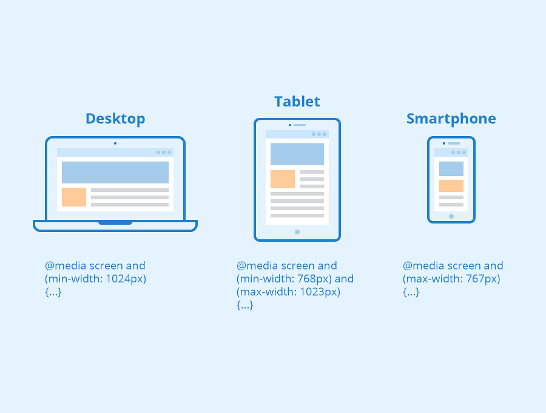

Las consultas de medios le permiten adaptar su sitio o aplicación dependiendo de la presencia o el valor de varias características y parámetros del dispositivo. Son un componente clave del responsive design (en-US). Por ejemplo, una consulta de medios puede reducir el tamaño de la fuente en dispositivos pequeños, aumentar el relleno entre párrafos cuando se ve una página en modo vertical, o aumentar el tamaño de los botones en las pantallas táctiles.
